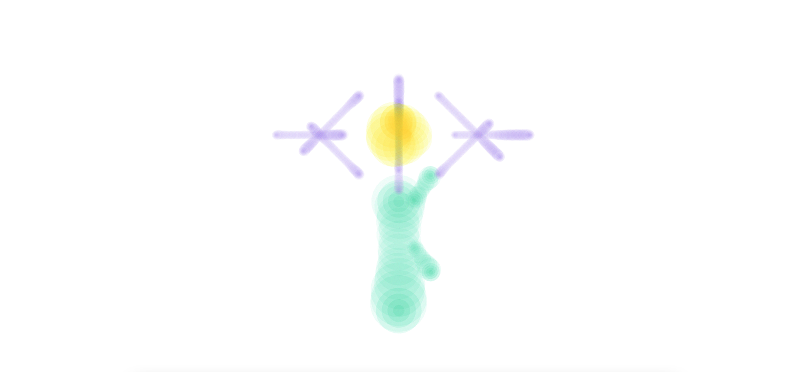

p5.js
Brush fait partie de l’installation Plantes numériques, créée pour mon projet de DNSEP,
qui présente plusieurs générateurs de plantes virtuelles évoluant sur des cercles au sol et animés avec P5.js.
Elle s’inspire des coups de pinceau en utilisant la librairie p5.brush et illustre comment une plante numérique peut
continuer à « vivre » dans l’espace de l’installation, contrairement aux plantes réelles.